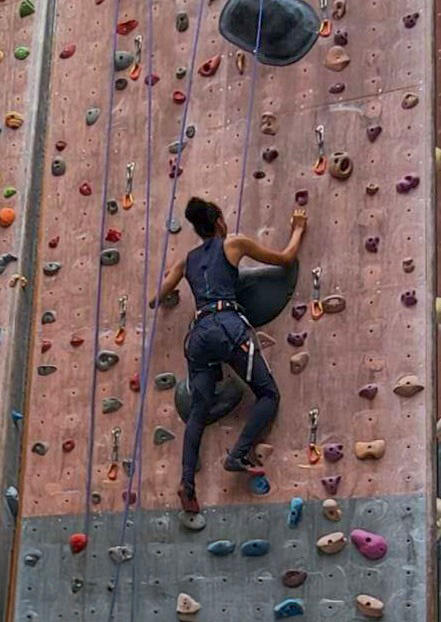
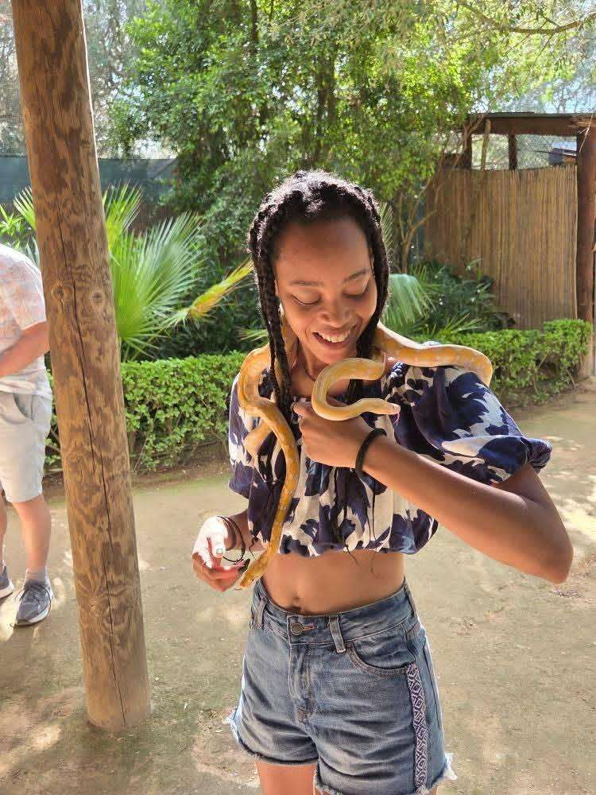
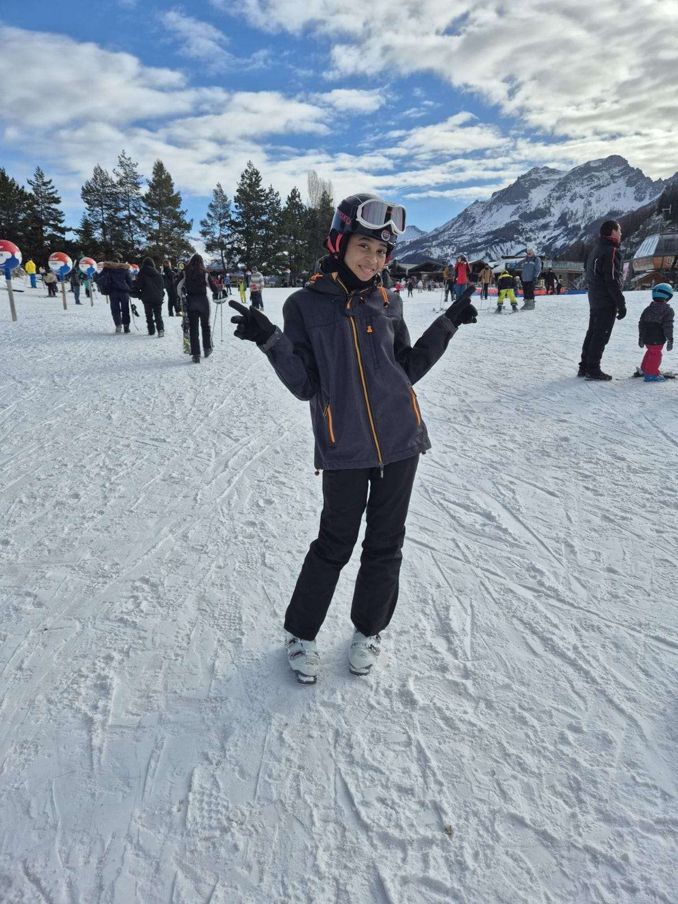
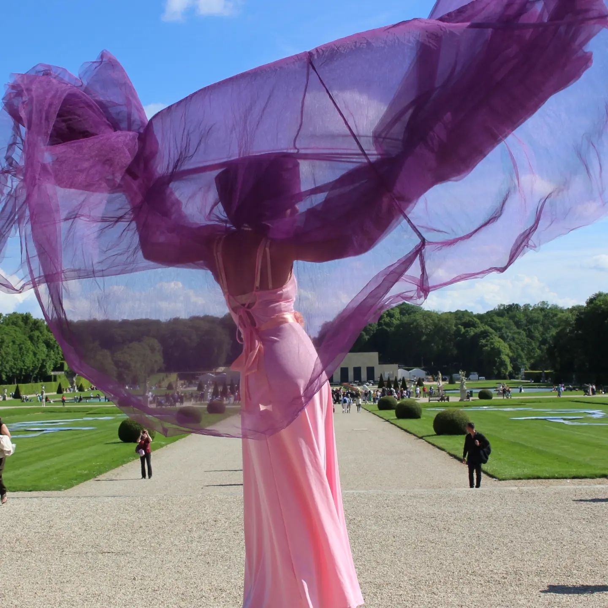

QUI SUIS-JE ?
Je m'appelle Lisa GROS-DESIRS,
Je suis diplômée d'un Bachelor en web design
et communication digitale.




Je m'appelle Lisa GROS-DESIRS,
Je suis diplômée d'un Bachelor en web design
et communication digitale.




SERVICES
Direction artistique,
Branding,
UX/UI design,
Product design
DESIGN
Illustrator,
Photoshop,
Lightroom,
Indesign,
Figma,
Fresco
DÉVELOPPEMENT
HTML/CSS/JS,
GSAP,
Github
AUTRES
SEO,
Gestion réseaux sociaux,
Notion
J'ai toujours ressenti le besoin de créer des univers visuels et de trouver du sens dans ce que j'observe. Les couleurs, les formes, les affiches, les logos ou les couvertures de livres m'inspiraient des histoires cachées, comme si chaque image avait quelque chose à raconter.
Un jour, une publicité m'a particulièrement marquée : celle d'un ours devenu producteur et réalisateur par passion. Une phrase ne m'a jamais quittée :
« Vous savez, j'ai vu tellement de grands films qu'un jour je me suis dit… pourquoi pas MOI ? »
ALORS, aujourd'hui, la direction artistique et le graphisme me permettent d'unir cette sensibilité et cette curiosité pour créer des expériences visuelles cohérentes et porteuses d'émotion.